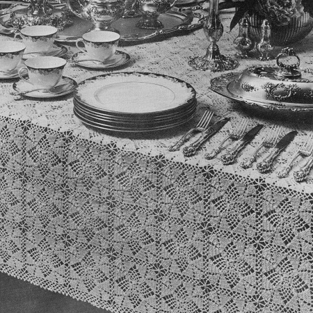
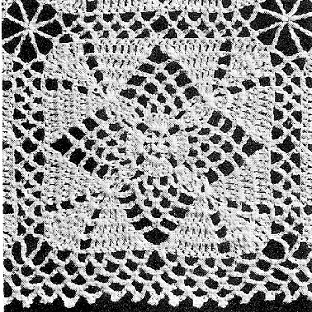

Pineapple Parquet Tablecloth Pattern
MATERIALS:
J. & P. COATS "KNIT-CRO-SHEEN," Art. A. 64: 51 balls of No. 1 White, No. 61 Ecru or No. 42 Cream.
Cloth measures 72 x 106 inches (excluding border)
Each motif measures 4 1/4 inches square
Milwards Steel Crochet Hook No. 7.
FIRST MOTIF: Starting at center, ch 5.
1st rnd: In 5th ch from hook make (dc, ch 1) 7 times. Join with sl st to 4th ch of ch-5. (8 sps)
2nd rnd: In next sp make sl st, ch 3 and 6 dc; (ch 2, skip next sp, 7 dc in next sp) 3 times; h dc in top of ch-3 to form last sp.
3rd rnd: Ch 3, 2 dc in sp just formed, ch 3, sc in next dc, * (ch 4, skip next dc, sc in next dc) twice; ch 3, 3 dc in next sp, ch 3, skip next dc, sc in next dc. Repeat from * around, ending with (ch 4, skip next dc, sc in next dc) twice; ch 3. Join to top of ch-3.
4th rnd: Ch 3, holding back on hook the last loop of each dc, dc in next 2 dc, thread over and draw through all loops on hook-starting cluster made; * (ch 4, sc in next loop) 4 times; ch 4, 3-dc cluster over next 3 dc. Repeat from * around, ending with (ch 4, sc in next loop) 4 times; ch 4. Join to tip of starting cluster.
5th rnd: Ch 3, in tip of starting cluster make 2 dc, ch 2, dc, ch 2 and 3 dc; ch 3, skip next loop, sc in next loop, (ch 4, sc in next loop) twice; ch 3, in tip of next cluster make 3 dc, ch 2, dc, ch 2 and 3 dc. Repeat from * around, ending with ch 3, skip next loop, sc in next loop, (ch 4, sc in next loop) twice; ch 3. Join to top of ch-3.
6th rnd: Ch 3, dc in joining, dc in next dc, 2 dc in next dc, * ch 2, 3 dc in next dc, ch 2, 2 dc in next dc, dc in next dc, 2 dc in next dc, ch 3, skip next loop, sc in next loop, ch 4, sc in next loop, ch 3, 2 dc in next dc, dc in next dc, 2 dc in next dc. Repeat from * around, ending with ch 3, skip next loop, sc in next loop, ch 4, sc in next loop, ch 3. Join to top of ch-3.
7th rnd: Ch 3, dc in joining, dc in next 3 dc, 2 dc in next dc, * ch 2, dc in next dc, 3 tr in next dc, dc in next dc, ch 2, 2 dc in next dc, dc in next 3 dc, 2 dc in next dc, ch 3, skip next loop, sc in next loop, ch 3, 2 dc in next dc, dc in next 3 dc, 2 dc in next dc. Repeat from * around, ending with ch 3, skip next loop, sc in next loop, ch 3. Join.
8th rnd: Ch 4, in joining make tr and dc; dc in next 6 dc, * ch 2, 2 dc in next dc, tr in next tr, 3 tr in next tr, tr in next tr, 2 dc in next dc, ch 2, dc in next 6 dc, in next dc make dc and 2 tr; in next dc make 2 tr and dc; dc in next 6 dc. Repeat from * around, ending with dc and 2 tr in last dc. Join to top of ch-4.
9th rnd: Ch 1, sc in joining, * (ch 5, skip next 2 sts, sc in next st) twice; ch 5, skip next dc, sc in next dc, ch 5, skip next sp, sc in next dc, ch 5, skip next 2 sts, sc in next tr, ch 11, skip next tr, sc in next tr, ch 5, skip next 2 sts, sc in next dc, ch 5, skip next sp, sc in next dc, ch 5, skip next dc, sc in next dc, (ch 5, skip next 2 sts, sc in next st) twice; sc in next tr. Repeat from * around. Join to first sc. Break off and fasten.
SECOND MOTIF: Work exactly as for First Motif until the 8th rnd has been completed.
9th rnd: Ch 1, sc in joining, (ch 5, skip next 2 sts, sc in next st) twice; ch 5, skip next dc, sc in next dc, ch 5, skip next sp, sc in next dc, ch 5, skip next 2 sts, sc in next tr; now join 2 motifs along one side as follows: Ch 5, sl st in any corner loop on First Motif; ch 5, skip next tr on Second Motif, sc in next tr; ch 2, sl st in next loop on First Motif; ch 2, skip next 2 sts on Second Motif, sc in next dc; ch 2, sl st in next loop on First Motif; ch 2, skip next sp on Second Motif, sc in next dc; ch 2, sl st in next loop on First Motif; ch 2, skip next dc on Second Motif, sc in next dc; (ch 2, sl st in next loop on First Motif; ch 2, skip next 2 sts on Second Motif, sc in next st) twice; sc in next tr; (ch 2, sl st in next loop on First Motif; ch 2, skip next 2 sts on Second Motif, sc in next st) twice; ch 2, sl st in next loop on First Motif; ch 2, skip next dc on Second Motif, sc in next dc; ch 2, sl st in next loop on First Motif; ch 2, skip next sp on Second Motif, sc in next dc; ch 2, sl st in next loop on First Motif; ch 2, skip next 2 sts on Second Motif, sc in next tr; ch 5, sl st in next corner loop on First Motif; ch 5, skip next tr on Second Motif, sc in next tr; working on Second Motif only, ch 5, skip next 2 sts, sc in next dc, ch 5, skip next sp, sc in next dc, ch 5, skip next dc, sc in next dc, (ch 5, skip next 2 sts, sc in next st) twice; sc in next tr; starting at * on 9th rnd of First Motif, complete motif exactly as for First Motif (no more joinings).
Make 17 x 25 motifs, joining motifs as Second Motif was joined to First Motif (where 4 corners meet, join corners to previous joining).
BORDER: Attach thread to loop preceding any of the 4 corner loops.
1st rnd: Ch 1, sc in same loop, * ch 5, in next corner loop make (sc, ch 5) 3 times and sc; ** ch 5, sc in next loop. Repeat from ** across to within next corner loop. Repeat from * around, ending with ch 2, dc in first sc to form last loop.
2nd rnd: Ch 1, sc in loop just formed, (ch 5, sc in next loop) twice; * ch 5, in next corner loop make sc, ch 5 and sc; ** ch 5, sc in next loop. Repeat from ** across to within next corner loop. Repeat from * around, ending with ch 2, dc in first sc.
3rd rnd: Ch 1, sc in loop, (ch 5, sl st in 3rd ch from hook, ch 2, sc in next loop) 3 times; ch 5, sl st in 3rd ch from hook, ch 2, * in next corner loop make sc, ch 5, sl st in 3rd ch from hook, ch 2 and sc; ** ch 5, sl st in 3rd ch from hook, ch 2, sc in next loop. Repeat from ** across to within next corner loop; ch 5, sl st in 3rd ch. from hook, ch 2. Repeat from * around. Join to first sc.
Break off and fasten. Block to measurements.

HOME